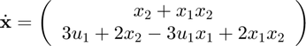

smybolicEquations
Outputs the mss-model as symbolic equations
Contents
Syntax
symbolicEquations(msys) [xp,y]=symbolicEquations(msys)
Description
symbolicEquations(msys) Outputs the state equations of the multilinear state-space object msys as a symbolic equation.
[xp,y]=symbolicEquations(msys) Outputs the state equations xp and the output equations y of the multilinear state-space object msys as a symbolic equation.
Note that this command requires the Symbolic Math Toolbox from Matlab.
Input Arguments
msys multilinear state-space model of type mss in CPN1 format
Output Arguments
xp vector or scalar of the state equations as symbolic equations
y vector or scalar of the output equations as symbolic equations
Example 1
Firstly we can create a random continuous-time system with n=2 states, m=1 input, p=2 output, and a rank of r=4:
msys=rmss(2,1,2,4)
msys =
mss with properties:
F: [1×1 CPN1]
G: [1×1 CPN1]
n: 2
m: 1
p: 2
ntype: '1'
ts: 0
Then we can check the equations by:
[xp,y]=symbolicEquations(msys)
xp =
(10019847143879479617130564704405*u1)/81129638414606681695789005144064 + (5446107898113957435312448814475*x2)/40564819207303340847894502572032 + 25080151865133454224759707479125/81129638414606681695789005144064
(2364521389257206159142764184533*u1)/40564819207303340847894502572032 + (4597976788001104214284280469943*x1)/10141204801825835211973625643008 + 24510632067871052468972673242447/40564819207303340847894502572032
y =
405915346306581/1125899906842624
(8596451650578180963667417106255*x1)/40564819207303340847894502572032 + 24715625766144926850242585950385/40564819207303340847894502572032
Example 2
Assume we have the following second-order explicit MTI model with 2 states and 1 input . We write the explicit MTI model as a CPN1 object by defining the structural matrix S to form the monomial
S=[0.5 -0.5; 1 0; 0 1];
and the parameter matrix with corresponding coefficients of the summands:
phi=[2 0; 4 6];
Then we can create explicit MTI model as a CPN1 object and the mss-object:
obj=CPN1(S,phi);
msys=mss(obj);
To display the equations, simply use:
[xp]=symbolicEquations(msys)
xp =
2*x2*(x1/2 + 1/2)
4*x2*(x1/2 + 1/2) - 6*u1*(x1/2 - 1/2)
To get the expanded form, we can use the expand() command of the Symbolic Math Toolbox.
expand(xp)
ans =
x2 + x1*x2
3*u1 + 2*x2 - 3*u1*x1 + 2*x1*x2